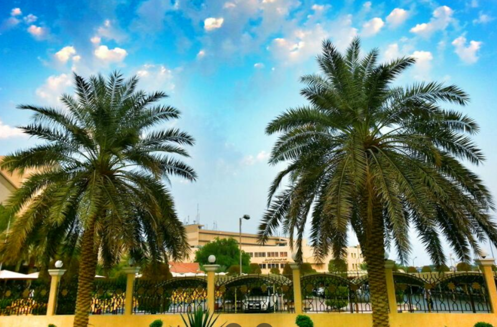

كلية الدراسات العليا - جامعة الكويت

معلومات عامة
تأسست كلية الدراسات العليا في أغسطس 1977 للاضطلاع بمهمة الإشراف على أنشطة الدراسات العليا وتنفيذ سياسة جامعة الكويت فيما يتعلق بالدراسات العليا . لقد حققت الكلية خلال العقود الثلاثة الماضية تقدما ملحوظا في توسيع نطاق التعليم العالي ورفع مستواه كما أدخلت ونفذت إجراءات فعالة لمراقبة نوعية برامج الدراسات العليا

موقع الكلية على خرائط قوقل

التخصصات المتوفرة في الكلية
استكمال الدراسات العليا في جميع التخصصات من ماجستير و دكتوراه

مجالات عمل الخرّيج
يتم توظيفه برتبة أعلى في المجال الذي تخصص فيه - العمل في القطاع الأكاديمي - الأعمال الإدارية

النسب و شروط القبول
المعدل المطلوب للتقدم لبرامج الماجستير: ألا يقل المعدل العام في الإجازة الجامعية الأولى عن (2.67) وألا يقل معدل التخصص عن (3.00) من سلم النقاط الأربع، ويجوز أن يستثنى من ذلك: البرامج التي لا تتطلب معدل تخصص تكتفي بالمعدل العام فقط، وذلك لبرامج الماجستير في دراسات المعلومات وإدارة الأعمال والاقتصاد والحقوق

فيديو من الكلية